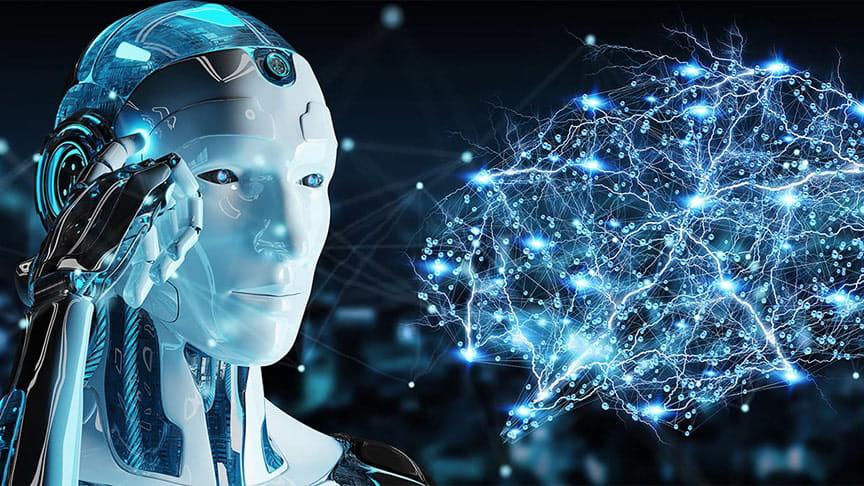
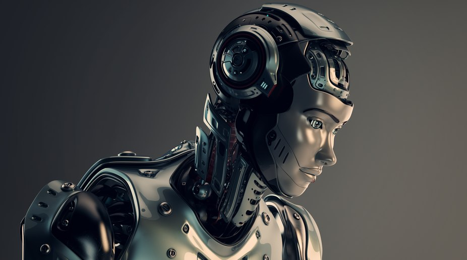
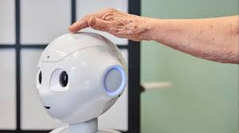
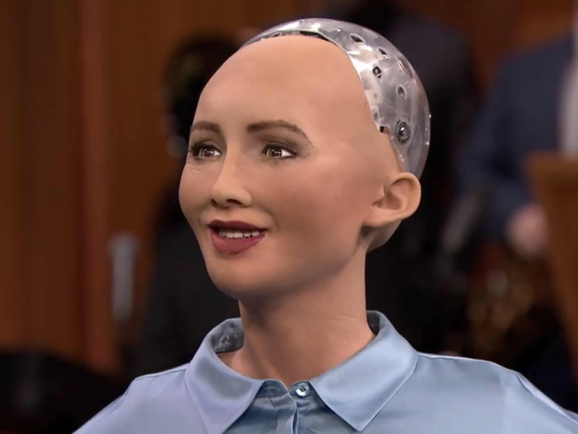

content :
Autonomous Robots
Examples of Autonomous
How do Robots function
Main components of a Robot
Robotics in manufacturing
Historyof Robotics
What Is Robotics?
Robotics is the intersection of science, engineering and technology that produces machines,
called robots, that replicate or substitute for human actions. Pop culture has always been fascinated with robots
examples: include R2-D2, the Terminator and WALL-E. These over-exaggerated, humanoid concepts of robots usually seem,
and mechanical capabilities that don’t put the possibility of a R2-D2-like machine out of reach in the future.
As technology progresses, so too does the scope of what is considered robotics. In 2005,
90 percent of all robots could be found assembling cars in automotive factories.
These robots consist mainly of mechanical arms tasked with welding or screwing on certain parts of a car.
Today, were seeing an evolved and expanded definition of robotics that includes the development,
Humanoid robots are robots that look like or mimic human behavior.
These robots usually perform human-like activities (like running, jumping and carrying objects),
and are sometimes designed to look like us,
Autonomous Robots :
Autonomous robots operate independently of human operators.
These robots are usually designed to carry out tasks in open environments that do not require human supervision.
They are quite unique because they use sensors to perceive the world around them,
and then employ decision-making structures
(usually a computer) to take the optimal next step based on their data and mission.
One example of an autonomous robot is the Roomba vacuum cleaner, which uses sensors to roam freely throughout a home.
EXAMPLES OF AUTONOMOUS :
Teleoperated Robots
Teleoperated robots are semi-autonomous
bots that use a wireless network to enable human control from a safe distance.
These robots usually work in extreme geographical conditions, weather and circumstances.
Examples of teleoperated:
robots are the human-controlled submarines used to fix underwater pipe leaks during
the BP oil spill or drones used to detect landmines on a battlefield.
What Is a Bot? What Is Software Robotics?
Software robotics, also called bots, are computer programs which carry out tasks autonomously.
One common use case of software robots is a chatbot.
A chatbot is a computer program that simulates conversation both online
and over the phone and is often used in customer service scenarios,
oftware robots only exist on the internet and originate within a computer, which means they are not considered robots
In order to be considered a robot, a device must have a physical form, such as a body or a chassis.(AGI)
How Do Robots Function?
Independent Robots:
Independent robots are capable of functioning completely autonomously and independent of human operator control.
These typically require more intense programming, mundane or otherwise impossible tasks,
diffusion and deep-sea travel to factory automation. as they eliminate certain jobs
Dependent Robots:
This is a relatively new form of technology and is being constantly expanded into new applications,
but one form of dependent robots that has been realized is advanced prosthetics that are controlled
A famous example of a dependent robot was created by Johns Hopkins APL in 2018 for Johnny Matheny,

What Are the Main Components of a Robot?
Robots are built to present solutions to a variety of needs and fulfill several different purposes,
and therefore, require a variety of specialized components to complete these tasks.
However, there are several components that are central to every robots construction,
like a power source or a central processing unit. Generally speaking, robotics components fall into these five categories:
Sensors :
Sensors provide a robot with stimuli in the form of electrical signals that are processed
by the controller and allow the robot to interact with the outside world.
Common sensors found within robots include video cameras that function as eyes,
photoresistors that react to light and microphones that operate like ears.
These sensors allow the robot to capture its surroundings and process the most logical conclusion based
on the current moment and allows the controller to relay commands to the additional components.
Actuators :
A device can only be considered to be a robot if it has a movable frame or body
Actuators are the components that are responsible for this movement.
These components are made up of motors that receive signals from the control system and move in tandem to carry out
the movement necessary to complete the assigned task.
Power Supply :
Like the human body requires food in order to function, robots require power.
Stationary robots, such as those found in a factory, may run on AC power through a wall outlet but more commonly
robots operate via an internal battery. Most robots utilize lead-acid batteries for their safe qualities
and long shelf life while others may utilize the more compact but also more expensive silver-cadmium variety.
Safety, weight, replaceability and lifecycle are all important factors to consider when designing a robot’s power supply.
End Effectors :
End effectors are the physical, typically external components that allow robots to finish carrying out their tasks.
Robots in factories often have interchangeable tools like paint sprayers and drills,
surgical robots may be equipped with scalpels and other kinds of robots can be built with gripping claws
or even hands for tasks like deliveries, packing, bomb diffusion and much more.
Uses of Robots
Robots have a wide variety of use cases that make them the ideal technology for the future
Soon, we will see robots almost everywhere. We’ll see them in hospitals, hotels and even on roads.
Robotics in Manufacturing
The manufacturing industry is probably the oldest and most well-known user of robots.
These robots and co-bots (bots that work alongside humans) work to efficiently test and assemble products,
like cars and industrial equipment. It’s estimated that there are more than three million industrial robots in use right now.

Logistics Robots
Shipping, handling and quality control robots are becoming a must-have for most retailers and logistics companies.
Because we now expect our packages to arrive at blazing speeds, logistics companies employ robots in warehouses,
and even on the road, to help maximize time efficiency. Right now, there are robots taking your items off the shelves,
ensure that you’ll have a face-to-metal-face encounter with a logistics bot in the near future.
Robots for Home
Its not science fiction anymore. Robots can be seen all over our homes, helping with chores,
reminding us of our schedules and even entertaining our kids.
Additionally, robots have now evolved to do everything from autonomously mowing grass to cleaning pools.
The most well-known example of home robots is the autonomous vacuum cleaner Roomba.
Travel Robots
Is there anything more science fiction-like than autonomous vehicles?
These self-driving cars are no longer just imagination. A combination of data science and robotics,
self-driving vehicles are taking the world by storm. Companies like Tesla, Ford, Waymo, Volkswagen
and BMW are all working on the next wave of travel that will let us sit back, relax and enjoy the ride.
Rideshare companies Uber and Lyft are also developing autonomous rideshare vehicles
that don’t require humans to operate the vehicle.

Healthcare Robotics
Robots have made enormous strides in the healthcare industry.
These mechanical marvels have use in just about every aspect of healthcare,
from robot-assisted surgeries to bots that help humans recover from injury in physical therapy.
Examples : of robots at work in healthcare are Toyota’s healthcare assistants,
which help people regain the ability to walk,
and TUG, a robot designed to autonomously stroll throughout a hospital and deliver everything
from medicines to clean linens.
History of Robotics
People have been pondering robots since ancient civilizations incorporated myths and beliefs
of “thinking machines” into their societies and invented the water clock.
Robotics has drastically changed since the time of the Greeks, Romans and Egyptians, but its history is vast.
Here’s a look at some of the most important events
(1737) Jacques de Vaucanson builds the first biomechanical automaton on record.
Called the Flute Player, the mechanical device plays 12 songs.
(2000) Sony unveils the humanoid Sony Dream Robot,
a bipedal humanoid entertainment robot it developed and marketed but never sold.
(2001) iRobots PackBot searches the World Trade Center site after September 11th.
(2002) iRobot creates Roomba. The vacuum robot is the first robot to become popular
in the commercial sector amongst the public.
(2003) Mick Mountz and the cofounders of Amazon Robotics (formerly Kiva Systems) invent the Kiva robot.
The robot maneuvers around warehouses and moves goods.
(2012) The first license for a self-driven car is issued in Nevada.
The car is a Toyota Prius modified with technology developed by Google.
(2014) Canadian researchers develop hitchBOT; a bot that hitchhikes across Canada
and Europe as part of a social experiment.
(2016) Sophia, a humanoid robot dubbed the first robot citizen, is created by Hanson Robotics.
The robot is capable of facial recognition, verbal communication and facial expression.
(2020) Robots are used to distribute COVID-19 tests and vaccinations.
(2020) 384,000 industrial robots are shipped across the globe
to perform various manufacturing and warehouse jobs.
(2021) Cruise, an autonomous car company,
conducts its first two robotaxi test rides in San Francisco.
Robotics
Artificial.page1
Metavers.page2
ArtificialIntelling.page3
Future technology.page5